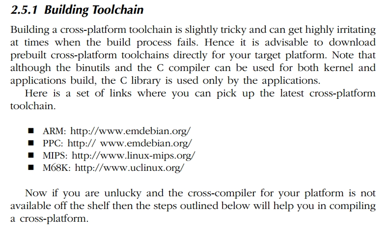

Buildroot Configurations.
Most of the documents about Buildroot are in
/dropbox/LINUX/BUILDROOT directory. Buildroot creates the whole linux system
depends on the configuration created from
make menuconfig. It creates a .config file and then the buildroot script depends
on it to create the Linux Image.
This document is based on the book Embedded Linux System Development resides in
/dropbox/LINUX/EMBEDDED LINUX SYSTEM DEVELOPMENT. There are
some image documents on the same folder about some introduction. We are starting from
2.4 Linux Start-Up Sequence (page-41).
I will discuss this start up sequences based on this ebook and also from other sources.
Bootloader operations.
Downloading Kernel Image and initrd.
Setting Up Kernel Arguments :
From Bootloader to Kernel Entry Point :
Kernel Start-Up:


SYSVINIT Articles. --start . SYSVINIT is obsolate in new Linux systems. systemd is used now.

Note that this files are not available in newer linux systems.
Neither this files and systems are present in newer linux systems.
SYSVINIT Articles. --end .
But recent linux sustems are not using
SYSVINIT. It is obsolate now.
systemd is used now.
Cross Tool Chain .
PAGE 50
Cross tool chain compiler and other tools are needed to build programs for target machines. I used
crosstool-ng for
this purpose. Other hand, binutils is an important set of tools needed by the GNU toolchain. It has the following tools for
various operations.
1.
addr2line.
2.
ar.
3.
as.
4.
c++filt.
5.
gasp.
6.
ld.
7.
nm.
8.
objcopy.
9.
objdump.
10.
ranlib.
11.
readelf.
12.
size.
13.
strings.
14.
strip.
PAGE 50
Following section of the book has description on how to make a complete cross toolchain manually.
